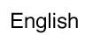
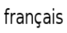
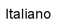
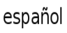
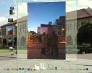

|  |
|  |
|
|
|  |
|  |

Vítejte v Projektu Looking Glass!
Stažení a instalace: Linux/Solaris x86, Windows
Co kdyby váš desktop byl skutečným 3D prostředím? Co kdyby se vaše databáze CD či filmů stala 3D jukeboxem? Projekt Looking Glass je založen na technologii Java a zkoumá rozšíření uživatelských možností používání desktopu a aplikací prostřednictvím 3D zobrazení a vizualizace. Jedná se o open source projekt založený a vyvinutý v Advanced Development divizi společnosti Sun Microsystems. Podporuje běh existujících nemodifikovaných aplikací v 3D prostředí a navíc obsahuje API pro 3D manažer oken a vývoj aplikací. V současné době je integrace existujících aplikací podporována na platformě Linuxu a Solarisu x86. Prostředí pro 3D aplikační vývoj je dostupné na platformách Linux, Solaris a Windows.

Projekt Looking Glass se zatím nachází ve své ranné fázi. Potřebujeme vaši pomoc k prozkoumání mnoha nápadů v oblasti dektopu a aplikací. Kód Projektu jsme dali k dispozici komunitě, aby mohla prozkoumat všechny aspekty technologie, namísto omezování přístupu na několik vyvolených. Věříme, že otevřený vývoj je výborný model pro využití této obrovské vzrušující příležitosti. Zapojte se tedy a pojďte s námi inovovat uživatelské rozhraní počítače!
Technologie Java je primárním programovacím jazykem. Věříme, že se jedná o dobrou volbu, zejména kvůli vysoké produktivitě a bohaté sadě podpůrných API, na nichž lze stavět. Nutno podotknout, že plánujeme i mapování do C++ a se systémem tedy budou moci pracovat i nativní aplikace.
Často kladené dotazy (FAQ), Významní přispěvatelé , Wiki info o vývojovém týmu LG3D
NovinkyVerze 0.7.1 je nyní dostupná zde, v sekci Stable Builds! Chcete-li rychle začít, nahlédněte do dokumentu "Začínáme s Projektem Looking Glass". Získejte nejnovější informace v diskusním fóru! |
|
Podporované klíčové vlastnostiV této chvíli se zaměřujeme na poskytnutí základní funkčnosti pro 3D výzkum a na vyladění počáteční platformy. Současná platforma podporuje následující klíčové vlastnosti:
|
Pro ty, kteří nevydrží jen čekat....Chcete-li nainstalovat a používat vývojové prostředí, nahlédněte do dokumentu "Začínáme s Projektem Looking Glass". Jste-li uživatelem Windows, zkuste "Spouštění Vývojářské verze LG3D na Microsoft Windows". Ve chvíli, kdy máte funkční vývojové prostředí, měli byste si přečíst dokument "Příručka vývojáře Projektu Looking Glass", kde najdete detailní informace o projektu a tvorbě 3D aplikací pro něj. Pokud používáte NetBeans, podívejte se do dokumetu "Sestavování a spouštění LG3D pomocí NetBeans". A "Tutoriály Projektu Looking Glass" vysvětlují, jak programovat LG3D aplikace. Pokud jste připraveni přispět do projektu kódem či dokumentací, přečtěte si "Contributing to Project Looking Glass", kde se dozvíte podmínky.
|
Probíhající podprojekty
Zde se nachází seznam podprojektů probíhajících pod lg3d-core (a lg3d-demo-apps, lg3d-incubator). Díky za vaše nabídky! Pokud chcete něco navrhnout, je to skvělé! Prosím, napište do tohoto threadu na javadesktop.org fóru a sdělte nám své nápady. Je-li téma specifické pro integraci s X11, podívejte se na stránky projektu lg3d-x11. Pokud byste chtěli vypomoci s některým z podprojektů, napište prosím do fóra. Jsem si jistý, že týmy budou za další pomoc velmi vděčné.
{kind=link}
-
Javadoc API 0.7.1
Kirk Turner (gameldar), Hideya Kawahara (hideya)
-
Tutoriály Projektu Looking Glass
Kirk Turner (gameldar)
-
3D Swing L&F
Kirk Turner (gameldar), Paul Byrne (paulby)
-
Splashscreen
Phil Dowell (phild)
-
Projekt lg3d-art
Tento projekt je místem pro sdílení dodatečných modelů a umělěckých zdrojů Projektu Looking Glass. Velmi oceníme vaši účast!
-
Projekty v lg3d-incubator
Jméno Popis Classpath Vlastníci Pingpong Jednoduchá 3D hra org.jdesktop.lg3d.apps.pingpong Johann Glaser (hansiglaser) Launcher Prototyp programu pro spouštění aplikací org.jdesktop.lg3d.apps.luncher Henrik Baastrup (hbaastrup) Browser3D 3D webový prohlížeč org.jdesktop.lg3d.apps.browser3d beer28, David Vallejo (dragmor) a David Weizades (ddew) DemoJMFJ3D JMF přehrávač pro LG3D org.jdesktop.lg3d.apps.jmf23D sat1196 Aim3d 3D AIM klient org.jdesktop.lg3d.apps.wilkoaim3d Jack Wu (wulabs) Zoetrope Prohlížeč obrázků org.jdesktop.lg3d.apps.zoetrope Yuichi Sakuraba (sakuraba) BlackGoat Čtení emailu org.jdesktop.lg3d.apps.blackgoat Dai Odahara (dai) JavaWorkSpace Síťový inteligentní 3D workspace org.jdesktop.lg3d.apps.intel3d Ashish (sri_ashish7s) Gol3D Hra života org.jdesktop.lg3d.apps.gol3d dwarfy_lenain (dwarfy) Clock 3D hodiny org.jdesktop.lg3d.apps.clock Juan González (opsi) Ls3D "ls" ve 3D org.jdesktop.lg3d.apps.ls3d Endo Yasuyuki (yasuyuki) BgManager Správce pozadí org.jdesktop.lg3d.apps.bgmanager Radek Kierner (radeczka) Fm3D 3D manažer souborů Neurčeno John Maltby (jmaltby) Weather Pozadí s aktuálním počasím org.jdesktop.lg3d.apps.weather Brian Hursey (bhursey) StartMenu 3D Start Menu org.jdesktop.lg3d.apps.startmenu Colin Bullock (cmbullock) -
Překlad dokumentace
Jazyk Vlastníci Čínština Wen Peng (wenpeng) Čeština Petr Hejl (sickboy) Holandština Martjin Kools (marve) Francouzština jibe77, Pierre (pinaraf) Němčina Christian Ost (cost) a Maik Ladwig (moonfire) Italština Giordano Fracasso (giosquad) a Danilo Bonardi (trix180) Japonština Yuka Kamiya (kyuka), Hideyuki Otokawa (otokawa), Yuichi Sakuraba (sakuraba), Kazuhiro Kazama (kazama) a Endo Yasuyuki (yasuyuki) Rumunština Abibula Aygun (aygun) Španělština Sergio Ivan Marcin (bitbeat) - Odkazy
-
Wiki
Hlavní stránka LG3D WikiPředmět Vlastníci Knowledge-base Martijn Kools (marve), David Weizades (ddew), Paul Shoemaker (t0rn) Nápady a diskuze pro 3D rozhraní Paul Shoemaker (t0rn), qgnjon, David Weizades (ddew) LG3D vývojový tým/uvolněné verze Van der Haegen Mathieu (dwarfy) Tipy pro vývoj LG3D aplikací Van der Haegen Mathieu (dwarfy) Projekty pro vylepšení dokumentace Van der Haegen Mathieu (dwarfy)
Jak se můžete zapojit
Jako první krok zvažte prosím účast jako pozorovatel projektu, což předpokládá, že se seznámíte s projektem a budete přispívat do diskusního fóra. Nahlédněte prosím také do dokumentu Contributing to Project Looking Glass, který obsahuje další informace o tom jak je možné se zapojit do projektu. Přečtěte si rovněž JavaDesktop Community Governance Guidelines, kde najdete obecné postupy pro spoluúčast v projektech JavaDesktop komunity, jako je například právě Projekt Looking Glass.
Oznamování problémů a chyb
Informace o aktuálních problémech a chybách lze nalézt pod položkou Issue tracker umístěnou v Project tools na postranní liště. Zde můžete vyhledávat problémy a defekty nebo najít konkrétní chybu. Pokud objevíte chybu, která ještě nebyla zadána, vyplňte údaje a zadejte ji. Pro nalezení souvisejících informací můžete také prohledávat archiv emailů na diskusním fóru na javadesktop.org.
Když reportujete chybu, snažte se prosím, co nejpřesněji specifikovat příznaky, se kterými jste se setkali a popsat prostředí vašeho počítače. Pokud dojde k pádu LG3D, následující log soubory poskytnou užitečné informace:
- /var/tmp/lgserver.log
- /var/log/Xorg.0.log
Tento log může být velmi dlouhý. Prosím, věnujte pozornost řádkům začínajícím (EE) a všechny podezřelé nahlašte. - hs_err_pid####.log
I tento log může být velmi dlouhý. Prosím, zašlete vše od začátku souboru, až po řádku
"--- P R O C E S S ---".
Pokud nemáte zkušenosti s hlášením chyb, můžete nahlédnout do těchto úvodních dokumentů:
- Průvodce vytvořením užitečného hlášení chyby
- Rychlý úvod do Issue Tracking
Zůstaňte informováni
Projekt Looking Glass je neustále vyvíjen. Nejlepší způsob, jak zůstat informován, je zapsat se do mailing listů projektu. Klikněte na položku Mailing lists v sekci Project tools postranní lišty na https://lg3d.dev.java.net/. Zde si můžete, podle úrovně vašeho zájmu, vybrat z několika mailing listů.
- Pokud vás zajímají novinky,
zapište se do announce@lg3d.dev.java.net.
- Jste-li vývojář a chcete diskutovat vývoj a chyby Projektu Looking Glass, zapište se do interest@lg3d.dev.java.net.
- Jestliže vás zajímá téma licencování,
pak zvolte lg3d_license@dev.java.net.
Zdroje informací
- FAQ - Často kladené dotazy
- Začínáme s Projektem Looking Glass
- Spouštění Vývojářské verze Projektu Looking Glass v prostředí Microsoft Windows
- První spuštění LG3D
- Příručka vývojáře Projektu Looking Glass
- Sestavování a spouštění LG3D pomocí NetBeans
- Tutoriály Projektu Looking Glass
- Konvence pro psaní kódu v programovacím jazyce Java
- Deployment aplikací v LG3D založený na jar
- javadesktop.org fórum: Projekt Looking Glass 3D
- Dotaz do databáze chyb
- JavaOne prezentace
- Projekt Looking Glass: Jeho architektura a první náhled API
- DRAFT - Přehled návrhu LG3D API (PDF 330KB)
- LG3D Verze 0.7.0 Javadoc
- Jak přejít na API 0.6.2 - Wiki stránka
- Projekty Summer of Code 2005 sponzorované Googlem
- Související technologie
- Diskuse návrhu uživatelského rozhraní
- Sdílení nových myšlenek -- Přepis chat-sessions z irc
Několik slov na závěr...
Děkujeme za váš zájem o projekt a čas strávený na těchto stránkách. Doufáme, že se také zapojíte a spolu s námi prozkoumáte tuto zábavnou příležitost. Máme také irc kanál, zatím však není příliš aktivní. Najdete jej jako #lg3d na irc.freenode.net
Vývojový tým Projektu Looking Glass
$Revision: 1.1 $ $Date: 2006-05-09 17:44:59 $ (English Version Revision: 1.185)